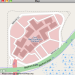

Map browser on kenai
I ripped the little demo map browser component out of my Oracle OpenWorld slides and moved it to kenai as a new project called OSMBrowser. Not very polished, more of a starting point for someone motivated to play :-)Thanks to the crew at the Open Street Map project for a nice database and tile server. A Thing of Beauty.
Update: I fixed the busted .jnlp file, so it can be run.
| October 20, 2009 |